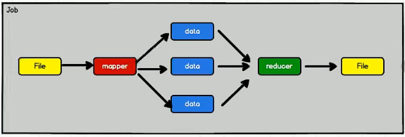
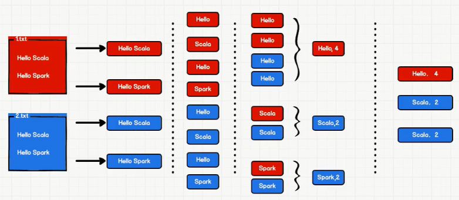

TreeviewCopyright © qgao 2021-* all right reserved, powered by aleen42
spark 常识
1 hadoop与spark的区别
Spark是Hadoop MapReduce的替代者，而不是Hadoop的替代者。
- hadoop：一次性数据计算和基于磁盘
框架在处理数据的时候，会从存储设备中读取数据，进行逻辑操作，然后将处理的结果重新存储到介质中。

上述图中显示为1个job，可以看见hadoop的数据处理模型很简单，但如果要处理复杂逻辑的时候，性能较低，不适合迭代处理，要把逻辑拆分成多个job，也就是上面图中的job多复制几个首尾相连。
- spark：丰富的数据处理模型和基于内存来对数据集进行多次迭代。

对hadoop进行的升级，将中间的磁盘换成了内存，即把中间的计算结果放进内存中，为下一次的计算提供了更加快速的方式。
问题：spark如果部署在共享的环境中，可能会带来资源不足的问题。
2 核心模块
- spark core：核心提供基础
- spark sql：处理结构化数据操作
- spark stream：处理流式数据操作
- spark mLib：机器学习相关
- spark graphX：图形挖掘计算
只学前3点。
3 案例->wordCount
